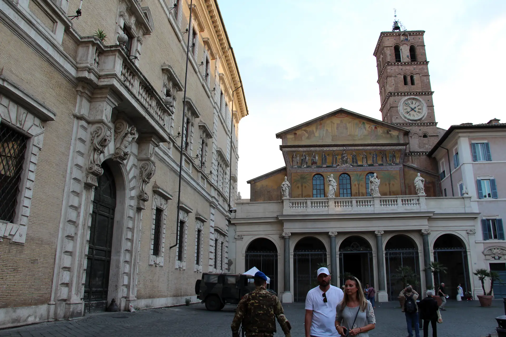
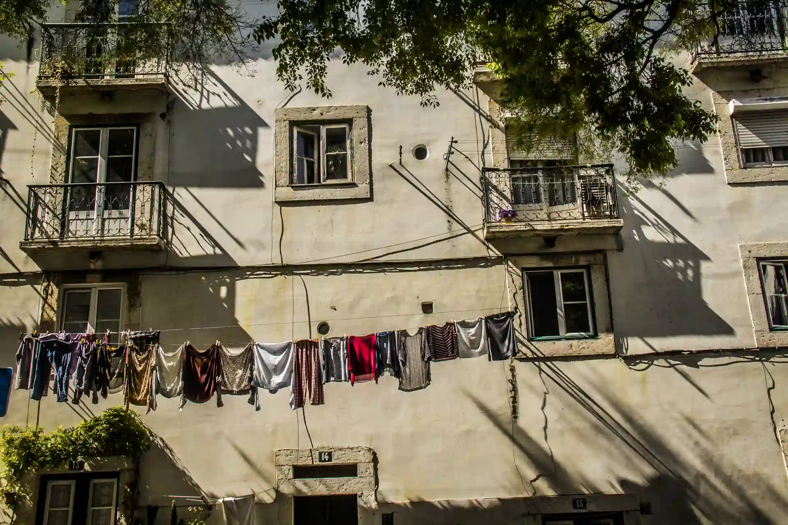
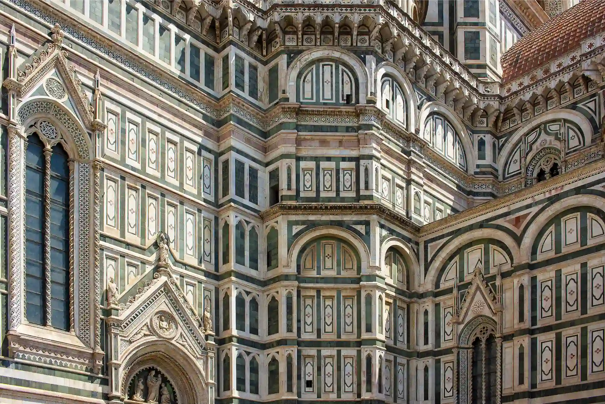
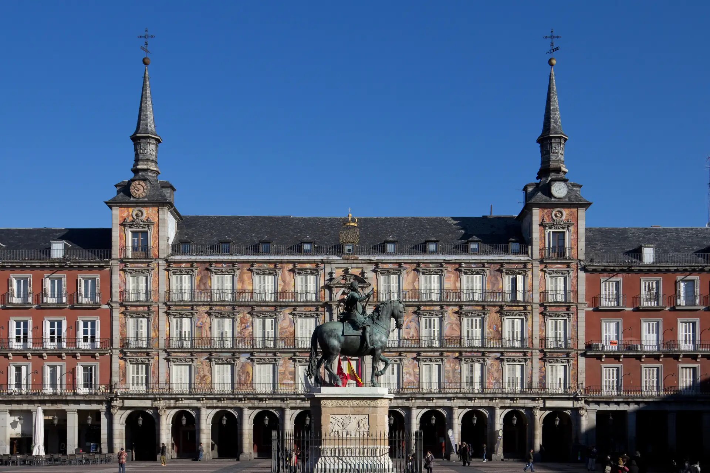
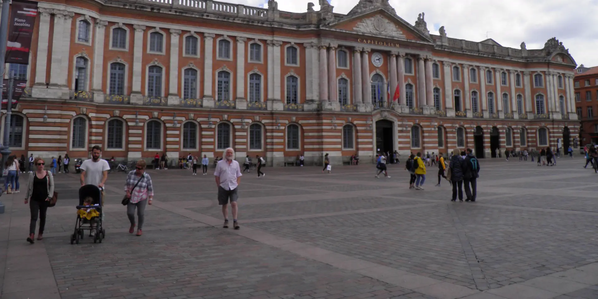

Historias
Curiosidades reales de cada ciudad, antes de pisarla.


Roma
Lo que Trastevere lleva siglos mostrando sin que nadie mire
París
Por qué Sacré-Cœur es un monumento a una derrota, no una victoria

Lisboa
Alfama sobrevivió al terremoto que borró media Lisboa: así se nota todavía

Florencia
La rivalidad que Florencia construyó en piedra, cúpula a cúpula

Madrid
El animal mitológico que ya no está en el escudo de Madrid
Valencia
La copa que el Carmen guarda desde la Última Cena (o eso dicen)

Nápoles
Una calle griega de 2.500 años sigue partiendo Nápoles en dos

Toulouse
Por qué a Toulouse le dicen la Ciudad Rosa
Berlín
Berlín no esconde su historia del siglo XX: la deja tallada en la calle

Estambul